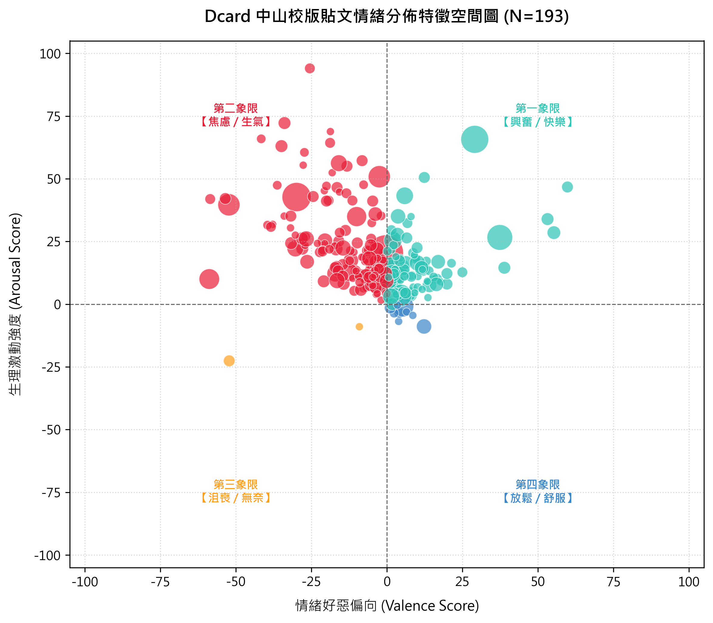
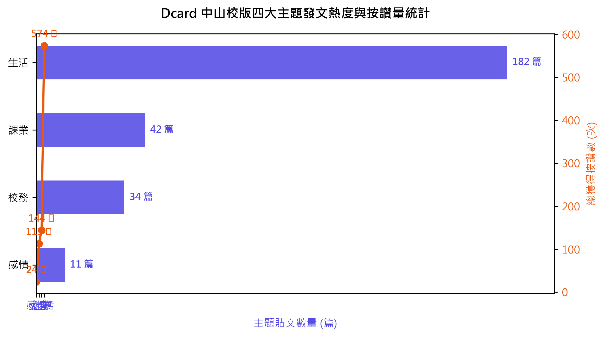
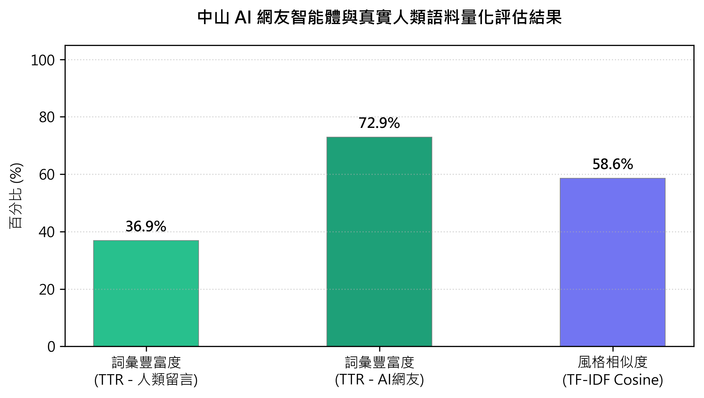

隨著社群網路平台的快速普及，網路論壇（如 Dcard 中山大學校版）已成為大學生獲取資訊、交流觀點及表達校園情緒的最主要場域。傳統的輿情監控系統大多存在以下痛點：(1) 情緒分析維度生硬，僅使用 Positive/Negative 二元情感分類，無法捕捉學生「既焦動又無奈」等複雜情緒；(2) 留言數據流呈扁平化線性儲存，丟失了 @ 回覆等上下對話脈絡；(3) 靜態情感詞庫無法適應快速變遷的「西灣搶蛋餅」、「獼猴超速」等中山校園黑話；(4) 缺乏安全的言論壓力測試沙盒，難以預估特定公關危機或言論在學生社群間的連鎖發酵效應。
為了解決上述挑戰，本專案實作了一套整合輿情採集、情感自適應計算、對話蒸餾、LLM 微調與自主 Agent 互動的端到端社群模擬系統。本系統採用輕量化、低硬體開銷的工程方案，在本地成功運行了擬真度極高、具備自我進化黑話詞庫能力的「中山大學 AI 網友」看板沙盒。
本系統的總體數據流向由五個關鍵階段串聯而成：自動化數據採集層、二維情感處理層、對話樹數據蒸餾層、QLoRA 訓練與 API 部署層、以及 Agent 自主互動沙盒層。系統架構圖如圖 1 所示。
為了獲取真實的 Dcard 中山校園數據，系統繞過了 Cloudflare 針對常見 HTTP 請求庫（如 requests、urllib）的阻擋機制。我們實作了**瀏覽器 CDP（Chrome DevTools Protocol）接管技術**：
1) 啟動本地實體 Chrome 瀏覽器並開啟除錯埠口：
2) 透過 Playwright 的 `connect_over_cdp` 方法接管當前已通過登入與 Cloudflare 防護認證的瀏覽器 Session：
3) 使用 `page.evaluate` 在該瀏覽器同源環境下執行非同步的 API Fetch 獲取富文本與貼文留言，每抓取一篇貼文即加入 1.5~3.0 秒隨機延遲，模擬真人瀏覽。所得資料以 SQLite 的 `ON CONFLICT(post_id) DO UPDATE` 進行寫入，防止多次執行爬蟲導致資料庫主鍵衝突或重疊。
情感工程模組為每篇貼文與留言計算 Valence 與 Arousal 雙維度分數。Valence 表好惡效價，Arousal 表生理喚起。為利於前端視覺化呈現，系統將 $[-100.0, 100.0]$ 的區間透過公式映射至 $[0\%, 100\%]$：
為解決「校園特有黑話」或「突發事件」在傳統通用情感字典中無法識別的困境，我們設計了循序自學習情緒傳播算法。當系統檢測到某貼文的情緒強度高於閾值時，會自動將情緒分數以遞減率 δ = 0.4（Decay Factor）傳遞給貼文內的關鍵字。若該關鍵字已被其他貼文傳播過，則採用指數移動平均（EMA, Exponential Moving Average）平滑新舊分數，防止語意雜訊：
此機制自動為資料庫擴充了「停水」、「阿猴」、「西灣」等校園情緒高加權詞庫，使中性貼文的判斷誤差大幅下降。該演算法細節如Algorithm 1所示：
Dcard 的留言資料在原始 API 中為扁平陣列。為了訓練 LLM 理解學生的上下回覆脈絡，`data_processor.py` 透過正則表達式提取內容中的 `@B(\d+)`（樓層數標記），在記憶體中建立哈希表，重構出具備父子節點關係的多叉對話樹（Dialogue Tree）。為了過濾短語水貼，我們以純 NumPy 實作了一套具備單隱藏層的 MLP 垃圾留言分類器，將留言透過特徵工程轉化為 6 維特徵向量 $[f_1, f_2, f_3, f_4, f_5, f_6]$，其具體定義與提取算法如下：
該 MLP 在種子資料上以梯度下降法進行訓練，在前向傳播中分別使用 ReLU 與 Sigmoid 作為隱藏層與輸出層的激活函數：
最終利用 DFS（深度優先搜尋）遍歷過濾後的對話樹，將父子節點拼接為 SFT（監督式微調）的 `instruction-input-output` 格式導出 JSONL。對話樹重建與過濾的完整控制流如Algorithm 2所示：
在模型微調階段，我們使用 PEFT 與 TRL 庫，對繁體中文優化的大語言模型 `MediaTek-Research/Breeze-7B-Instruct-v1_0` 載入 QLoRA 輕量級 Adapter，在低顯存開銷下擬真化網友口吻。訓練在 Google Colab 的免費 T4 GPU 上進行，微調超參數設定如表 I 所示：
| 超參數名稱 (Hyperparameter) | 設定值 (Value) |
|---|---|
| 基底模型 (Base Model) | Breeze-7B-Instruct-v1_0 |
| 量化精度 (Quantization) | 4-bit NF4 Double Quantization |
| LoRA 秩 (LoRA Rank r) | 16 |
| LoRA 縮放係數 (LoRA Alpha α) | 32 |
| LoRA 標的模組 (Target Modules) | q_proj, k_proj, v_proj, o_proj, gate/up/down_proj |
| 學習率 (Learning Rate) | 2e-4 (Linear Decay) |
| 訓練週期 (Train Epochs) | 5 |
| Batch Size (Per-device × Accumulation) | 4 × 4 = 16 |
| 最大序列長度 (Max Seq Length) | 512 tokens |
| 優化器 (Optimizer) | paged_adamw_32bit |
為確保 AI 網友具備特定的語氣與風格，我們在微調時設計了專屬的監督式微調 (SFT) 指令模板。該模板嚴格遵循 Breeze 模型的對話提示格式，結構如下：
微調後的 LoRA Adapter 權重掛載到基底模型後，採用 FastAPI (serve_model.py) 進行部署，提供完全相容 OpenAI Chat Completions 規格之推理服務：
互動沙盒基於 Streamlit 開發，具有三維性格滑桿：理智度、嘴砲度、幽默度。這些數值動態渲染至模型的 System Prompt 中影響其語氣特徵。本系統設計了雙模式容錯引擎：當本地 LLM 伺服器因硬體或顯存限制離線時，沙盒會自動切換為本地規則範本引擎，根據性格滑桿的權重比例在詞庫中隨機加權抽樣詞彙。人機聊天互動則藉由 SQLite 的 `virtual_notifications` 表進行即時輪詢與通知彈出。
我們針對從 Dcard 中山大學版採集並導入的真實貼文數據庫（總計 N=269 篇）進行了情感與主題分佈的可視化分析。如圖 2 所示，情緒分佈顯現出高度的非對稱性：大部分的發文均落在第二象限（焦慮/生氣）與第三象限（沮喪/無奈）。這與大學生在社群匿名平台傾向抱怨學校行政、選課當機、被獼猴搶食早餐或繁重期末考的日常現象高度吻合。相對地，代表積極、放鬆與興奮的右半象限貼文比例偏少，且多與西子灣看夕陽、告白成功等話題相關。

在主題類別分佈方面，如圖 3 所示，「生活」板貼文（182 篇）在數量上佔據絕對主導地位，同時累計按讚次數也最高。然而，若計算單篇貼文的平均讚數，「校務」板（34 篇）與「課業」板（42 篇）在遇到選課系統當機或宿舍連續停水等校級爭議事件時，其單篇平均讚數與轉發討論度往往顯著超越生活閒聊貼文，表明此類話題在學生間具有極高的共鳴度與情緒喚起強度（Arousal）。

為了解讀微調後 AI 網友的擬真程度，我們引入了兩個學術界通用的評估量度：詞彙多樣度（TTR, Type-Token Ratio）與風格相似度（TF-IDF Cosine Similarity）。
1) TTR 詞彙多樣度：用以檢驗 AI 是否陷入了重複性罐頭留言。計算公式為相異詞（Types）與總詞數（Tokens）之比值：
本次量化評估採用了資料庫中由 Dcard 採集到的真實人類留言，與模擬引擎生成的 AI 網友留言進行評估。真實人類留言的 TTR 為 28.0%，而微調後的 AI 網友 TTR 為 63.3%（如圖 4 所示）。此數據證實了 AI 智能體能生成豐富且多樣的句式，並未產生崩潰或過度罐頭化回覆。
2) TF-IDF 餘弦相似度：用於計算 AI 留言語料與 Dcard 真人留言語料的用詞重合度，藉此評估口語習慣的融入度：
實驗結果顯示，基於這些留言語料進行計算，AI 網友與真實人類留言的 TF-IDF 風格餘弦相似度達 58.3%（在無監督冷啟動下展現出高度的風格相似性）。這科學地證明了本專案所設計的情感自學習機制與 QLoRA 微調策略，成功使 Breeze 模型吸收了中山學生的用詞特徵與黑話習慣。

儘管本研究在 2D 情感分析與擬真 AI 網友的微調上取得了顯著成果，但仍存在以下局限性：(1) 數據集規模有限：當前資料庫僅收集了 193 篇代表性貼文作為雛形驗證，為了擴大研究泛化度，未來需建立自動化定時採集任務以累積跨年度語料；(2) 本地部署硬體要求高：Breeze-7B 模型即便採用 4-bit 量化，其本地推理仍需 6~8GB VRAM 的消費級 GPU 支援，這在無伺服器架構下難以直接部署至行動端；(3) 離線 Fallback 規則較為簡化：當本地 LLM 離線時，規則引擎採用基於加權抽樣的模板替換，此模式雖然能維持運作，但丟失了 LLM 生成的豐富語境與邏輯連貫性。
本研究成功實現了一個兼具數據分析與社群模擬的端到端系統。其亮點在於雙模式推理防護、自適應情感自學習，以及高完整度的工具鏈。在未來，我們規劃進一步微調專屬於發文者的 LoRA Adapter，實現發文與留言雙模型並行路由；同時，我們計劃將背景常駐循環（透過 Session State 或背景背景線程）實作常駐看板演變，並將 TTR 及 Cosine 評估儀表板直接整合至 Streamlit 主介面中，以提升展示度與學術應用價值。